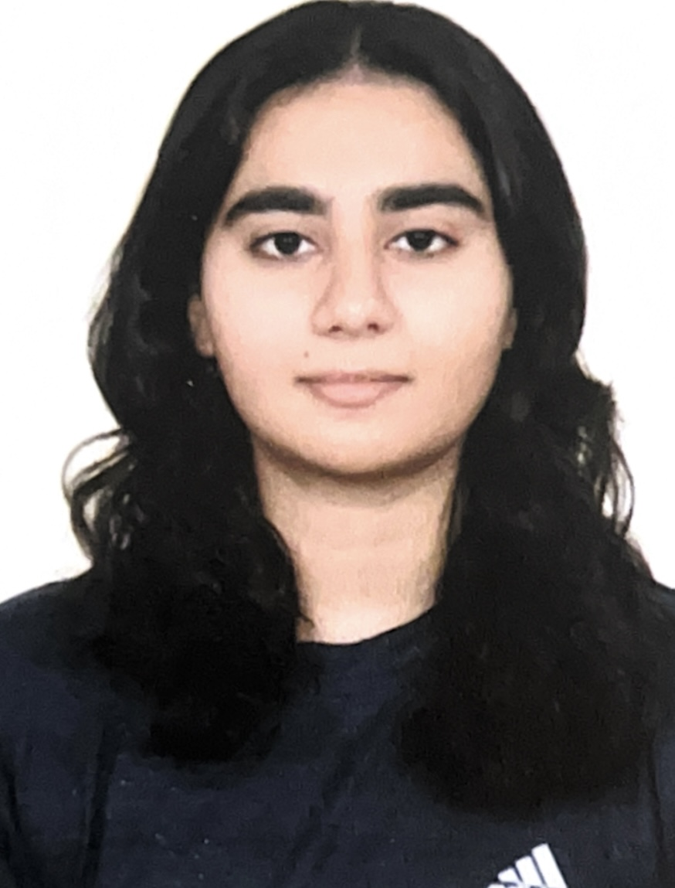
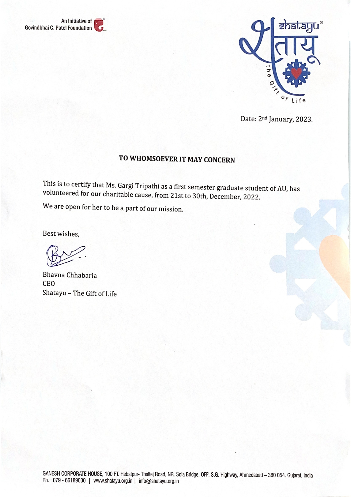
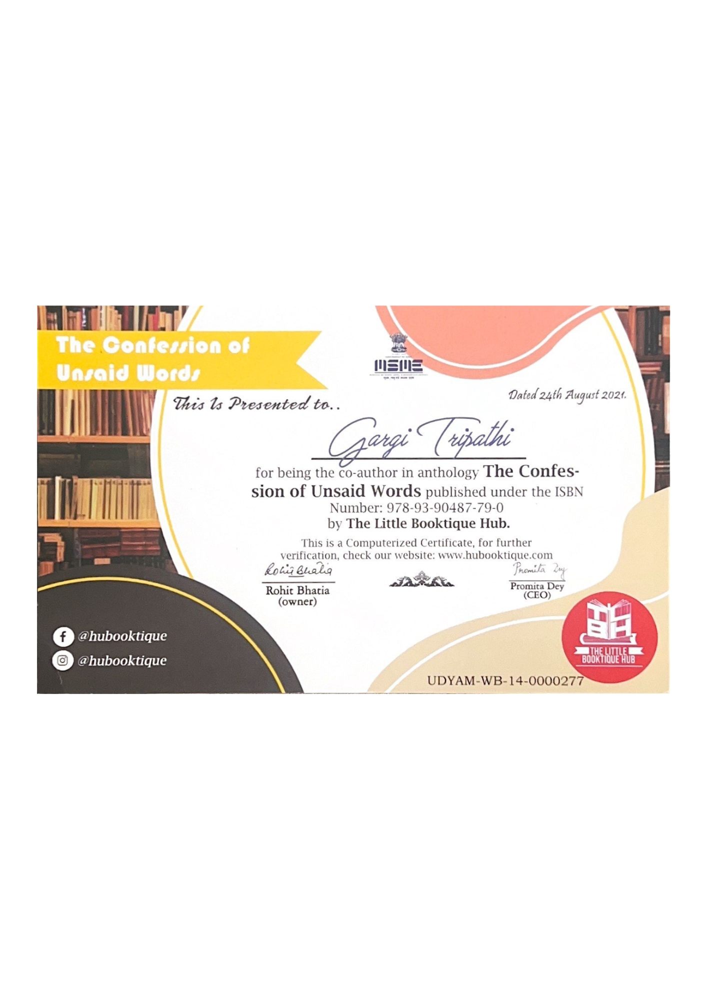

Gargi Tripathi

Profile
Aspiring Business Administration professional with a proven talent for writing, persuasion, research, and ideation. Currently pursuing a Bachelor's degree, I have demonstrated leadership and organizational skills as a member of my university’s literary club, where I successfully led an event that achieved one of the highest levels of interaction. Passionate about harnessing the power of words to drive impactful communication, I am also deeply interested in finance and economics. I aim to leverage my skills and experiences in marketing, brand management, and financial analysis to support organizational growth and innovation.
Education
Work Experience
-
VOLUNTEER AT SHATAYU FOUNDATION
Powered by Ganesh Housing Corporation Limited
2022

Duties Performed
- Copywriting
- Frequently brainstormed slogans and ideas for their cause
- Spreading awareness via different mediums, both online and offline
-
CO-AUTHOR
The Little Booktique Hub
2021

Duties Performed
- Published a short story called,‘Willow’ in the anthology,‘The Confession of Unsaid Words’
Skills I've Developed
Personal Skills
- English Proficiency
- Strong Written and Verbal
- Communication Skills
- Adaptability and Quick Learning
- Attention to Detail
- Excellent Time Management and Ability to Meet Deadlines
- Creative Approach to Problem-Solving
Professional Skills
- Basic knowledge of HTML, PostgreSQL and Python
- Basic knowledge of Finance and Economics
Language Skills
- Fluent in 3 languages (English, Hindi and Gujarati)
Hobbies
- Drawing, Sketching and Painting
- Singing and Listening to Music
- Creative Writing and Novel Writing
- Reading
Looking forward to Connect